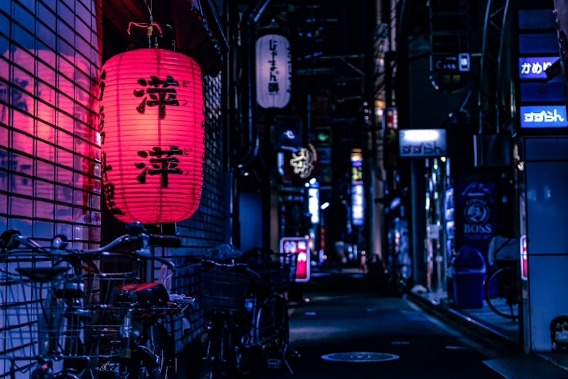
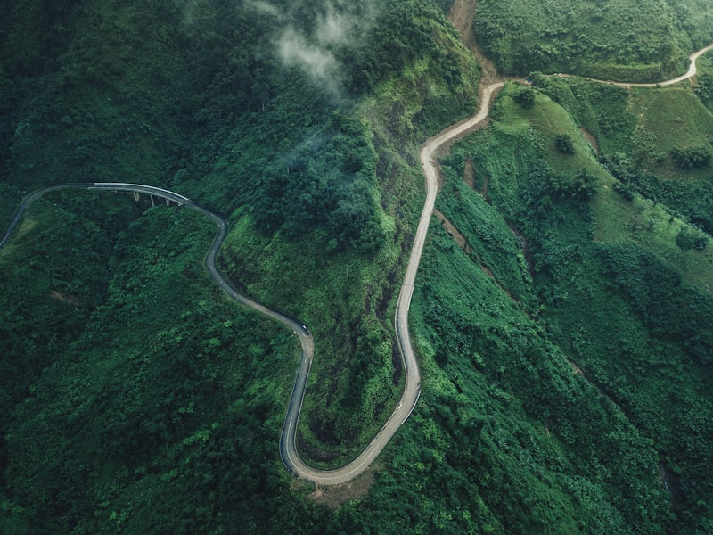
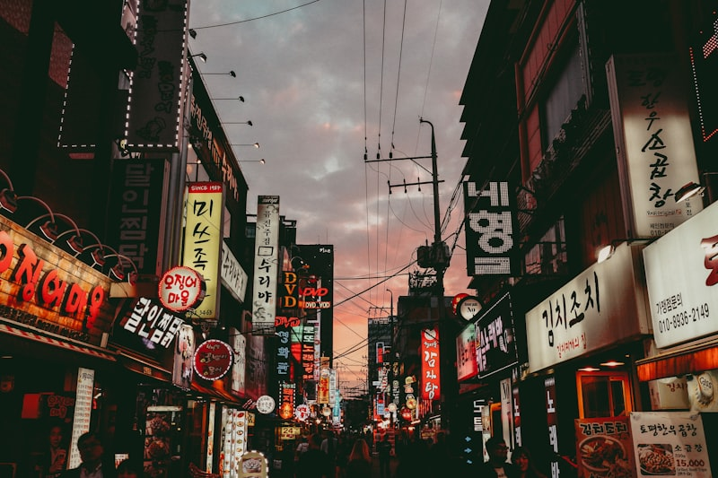
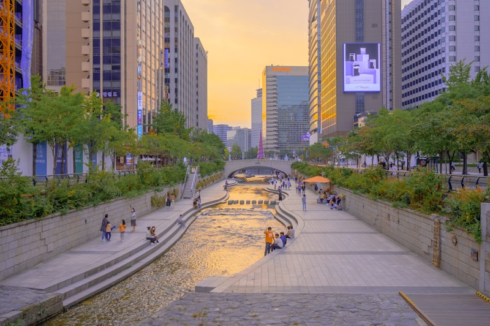

✦ A Personal Journey Around the World ✦
Wandering Through Cultures, Chasing Horizons
點擊地圖上的標記，探索各國旅遊日誌與照片牆
踏上泰國的土地，迎面而來的是濃烈的香料氣息與金碧輝煌的廟宇光芒。曼谷的臥佛寺與大皇宮讓人屏息， 每一塊金磚都訴說著數百年的王朝故事。夜晚的考山路燈火通明，街邊小販的炒金麵香氣四溢， 那是一種只有在泰國才能感受到的獨特節奏。
北上清邁，古城牆圍繞著數百座寺廟，每逢週六夜市，整條街道化身為藝術品與手工藝的海洋。 素帖寺坐落於山頂，俯瞰整個清邁盆地，雲霧繚繞間彷彿置身仙境。 南下甲米，皮皮島的碧藍海水與石灰岩峭壁構成了一幅無與倫比的自然畫作。


蘭嶼是台灣東南方的珍珠，這座離島保留著最原始的自然風貌與達悟族的獨特文化。 飛魚季時，漆黑的夜晚被漁火點亮，傳統的拼板舟在海上輕輕搖晃， 那是一種只有在蘭嶼才能感受到的寧靜與和諧。
沿著環島公路騎機車，海風吹過臉龐，紅頭岩、東清灣的壯麗海景盡收眼底。 部落裡的老人用達悟語講述著古老的故事，傳統的竹屋在陽光下閃閃發光。 在蘭嶼，時間彷彿放慢了腳步，每一刻都是珍貴的回憶。



首爾是一座新舊交融的城市，古老的宮殿與現代的摩天大樓並肩而立。景福宮的莊嚴氣勢訴說著朝鮮王朝的輝煌歷史， 而江南區的熙熙攘攘則代表著當代韓國的活力與創新。明洞的購物街人潮洶湧，每間店鋪都展示著最新的時尚潮流。
在首爾的夜晚，漢江公園的燈光倒映在水面上，形成一幅迷人的夜景。韓式烤肉的香氣、街邊小吃的誘惑、 還有那些在弘大街頭遇見的藝術創作，都讓這趟旅程變得格外難忘。


紐約，這座永不沉睡的城市，以其壓倒性的能量迎接每一位旅人。 從布魯克林橋眺望曼哈頓天際線，摩天大樓在晨霧中若隱若現， 帝國大廈的頂端刺破雲層，那是人類意志與鋼鐵的完美結合。 中央公園是這座鋼鐵叢林中的一片綠洲，秋日的金黃樹葉鋪滿了整條林蔭大道。
飛往懷俄明州，黃石國家公園以其壯觀的地熱景觀震撼了我的感官。 大稜鏡溫泉那令人難以置信的彩虹色澤，是地球上最接近外星景觀的存在。 老忠實間歇泉每隔九十分鐘準時噴發，那股衝天的熱氣柱彷彿是大地的呼吸。 大峽谷的壯闊讓語言失去了意義，只有站在南緣俯瞰那無盡的紅色岩層， 才能真正感受到時間的深度。

📄 網站設計說明
✨ 請將 design-documentation.pdf 檔案放入這個目錄中
{kind=link}
{kind=link}
{kind=link}
{kind=link}
{kind=link}
{kind=link}
{kind=link}
{kind=link}
{kind=link}
{kind=link}
{kind=link}
{kind=link}